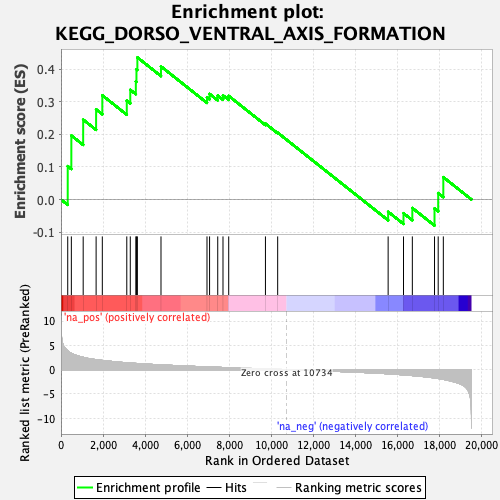
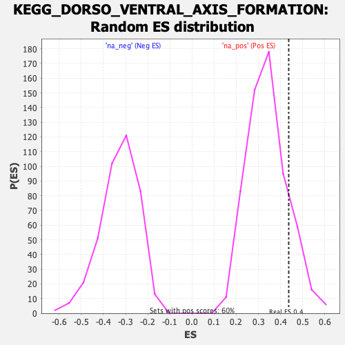

| | | Dataset | PFS |
| Phenotype | NoPhenotypeAvailable |
| Upregulated in class | na_pos |
| GeneSet | KEGG_DORSO_VENTRAL_AXIS_FORMATION |
| Enrichment Score (ES) | 0.43693972 |
| Normalized Enrichment Score (NES) | 1.2795346 |
| Nominal p-value | 0.15166667 |
| FDR q-value | 0.97027886 |
| FWER p-Value | 1.0 |
Table: GSEA Results Summary

Fig 1: Enrichment plot: KEGG_DORSO_VENTRAL_AXIS_FORMATION
Profile of the Running ES Score & Positions of GeneSet Members on the Rank Ordered List

Fig 2: KEGG_DORSO_VENTRAL_AXIS_FORMATION: Random ES distribution
Gene set null distribution of ES for KEGG_DORSO_VENTRAL_AXIS_FORMATION